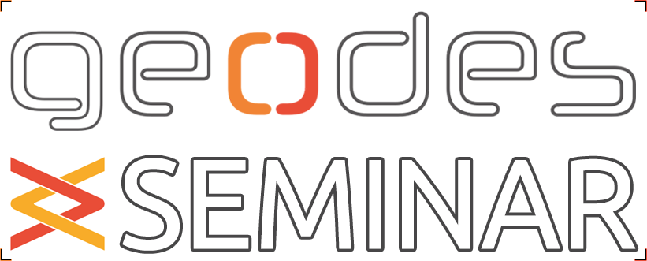

The GEODES Seminar aims to bring together members of the group in a semi-formal setting with a semi-regular timing.
We'd especially love to see students at all levels reporting their progress, entertain presentations on core or adjacent topics, host dry-runs before conferences, etc.
Upcoming talks
There are no upcoming events scheduled currently. Check back later.
Previous talks this season
Previous talks in previous seasons
-
Multilinguality in Large Language Models [presentation]
- Ayla Rigouts Terryn – Assistant Professor at Dép. de Linguistique et traduction, UdeM
-
Verification of Safety-Critical Systems
- Daniel Varro – Professor of Software Engineering at Linkoping University
-
Recent Progress in Neural Program Repair
- Martin Monperrus – Professor of Software Technology at KTH Royal Institute of Technology
-
Extending Scala for Safe Concurrent Programming
- Philipp Haller – Associate professor of computer science at KTH Royal Institute of Technology
-
The IDEA of Us: Engineering Socially-Aware AI Systems
- Amel Bennaceur – Associate Professor at the Open University, UK
-
Embracing Deep Variability For Reproducibility & Replicability
- Benoit Combemale – Full Professor of Software Engineering at the University of Rennes
-
AI-Assisted Automated Programing and Automated Program Repair
- He Ye – Postdoctoral researcher
-
Large Language Models for Code - Introduction and Recent Breakthroughs
- Martin WEYSSOW – PhD candidate
-
Open collaborative data engineering
- Prof. Dirk Riehle – Friedrich-Alexander-Universität Erlangen-Nürnberg
-
Video Game Software Engineering: Troubles, Techniques, and Tools
- Cristiano POLITOWSKI – Postdoc
-
Conceptualization and Development of ML-based Recommender Systems for Software Engineering [presentation]
- Claudio DI SIPIO – Invited researcher
-
Characterizing and building datasets of software repositories
- Jessie GALASSO – Postdoc
-
A Multi-Step Learning Approach to Assist Code Review
- Oussama BEN SGHAIER – PhD student
-
Migrating Enterprise applications into Software Product Lines
- Tewfik ZIADI – Paris-Sorbonne University, France
- Uncertainty in Software Models [presentation]
- Learning from Code Repositories to Recommend Model Classes
- Process modeling, analysis and enactment with the FTG+PM formalism [presentation]
- Systematic Reviews with ReLiS [presentation]
- Fine-grained Analysis of Similar Code Snippets
- The ongoing problem of reuse and evolution in software architectures: illustration through four research projects
-
Moose – A modular, composable software analysis environment
- Stéphane Ducasse – INRIA Lille, France
- Nicolas Anquetil – University of Lille, France
- Introduction to Reinforcement Learning
- Multi-paradigm modeling of complex heterogeneous systems – Are we there yet?
-
Improving online visibility for you and your research [presentation]
- Bentley James Oakes
- Lola Burgueño – Open University of Catalonia, Spain
-
AST-Probe: Recovering abstract syntax trees from hidden representations of pre-trained language models
- José Antonio Hernández López – Universidad de Murcia, Spain
Contact
Got an interesting topic you'd like to present? Reach out to your favorite postdoc for details.